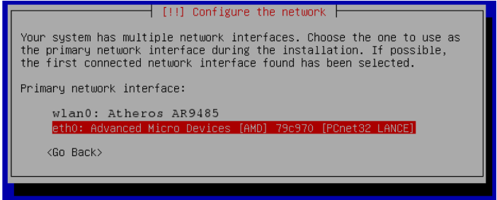
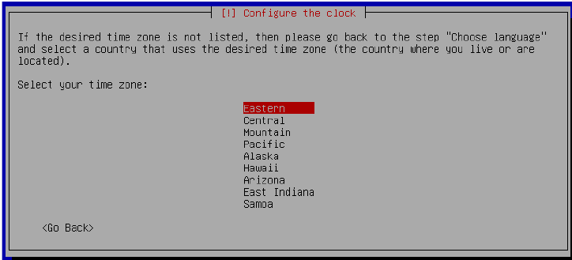
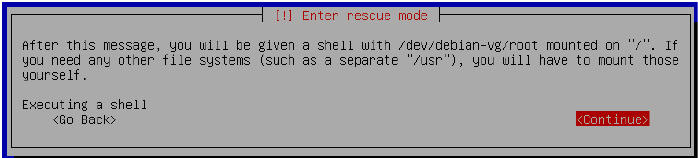

عیب یابی
در صورتی که هنگام تلاش برای بوت کردن دبیان با چشمک زدن نشانگر موس یا صفحه سیاه روبرو شدید این پیوست شما را در مسیر تعمیر نصاب دبیان قرار خواهد داد این خطابخاطر وجود باگ در دو مورد است یکی گراب که بوت لودر است و دوم نصاب دبیان است که خطای خاصی را از طرف گراب؛ هنگام نصب آن بر روی درایو بوت برای اولین بار؛گزارش نمیدهد.
۱. دیسک سی دی یا درایو یو اس بی را که به عنوان نصاب دبیان استفاده کردید را قرار داده و ری استارت کنید یا کامپیوتر خود را روشن کنید. چنان که در فصل ۱ و بخش - د بیان شداز روی دیسک نصاب بوت کنید.
۲. زمانیکه صفحه شبیه به صفحه زیر را مشاهده کردید درایو فلشی را که باآن سیستم عامل دبیان جدید را که نصب کردید بوت میکنید قرار دهید سپس ازفلش های جهت نما استفاده کرده و بر روی گزینه Advanced options بروید و سپس Enter کنید.
۳. در صفحه بعد با قلش های جهت نما بر روی گزینه Rescue mode رفته و Enter کنید.
۴. در صفحه بعد زبان پیشفرض را انتخاب کرده و Enter کنید.
۵. در صفحه بعد مکان پیشفرض را قبول کرده و Enter کنید.
۶. در صفحه بعد زبان کیبوردتان را انتخاب کرده و Enter کنید. احتمالن دبیان بر اساس زبانی که انتخاب کردهاید پیشنهادی میدهد.
۷. فرآیند نصب اکنون چند مرحله را میگذراند و به صورت اتوماتیک شبکه شما را تنظیم می کند. اگر از اتصال سیمی استفاده میکنید احتمالن همه چیز به صورت اتوماتیک صورت خواهد گرفت و شما به مرحله بعد خواهید رفت.اگر شما شبکه بی سیم داشته باشید (وایرلس) ممکن است توسط نصاب به صفحهای هدایت شوید تا در آنجا کارت شبکه خود را انتخاب کنید. اگر به صفحه ی primary network interface هدایت شدید eth0 را انتخاب کرده و Enter کنید.

اگرچه پیشنهاد نمیشود اگر میخواهید در ادامه پروسه نصب از اتصال بی سیم استفاده کنید wlan0 را انتخاب کرده و Enter را بفشارید و در ادامه به صفحاتی هدایت میشوید که از شما نام شبکه بی سیم (SSID) ؛ پسورد و غیره را می خواهد.در خلال این گام ممکن است هشداری مبنی بر نیاز به نصب سفت افزار (firmware) از روی دیسک را دریافت کنید تا شبکه بی سیم به درستی کار کند. اگر به چنین پیامی هدایت شدید No را انتخاب کنید بجایش از اینترنت سیمی استفاده کنید. شما میتوانید بعدن درایورهای بی سیم خود را جستوجو و بر اساس دستورالعملشان نصب کنید.
۸. در نهایت شما به صفحه Enter the hostname for this system هدایت می شوید. اینجا را به صورت پیشفرض یعنی debian رها کردن و Enter کنید.
۹. در صفحه بعد از شما Domain name خواسته می شود. اینجا را خالی گذاشته و Enter کنید.
۱۰.در ادامه ممکن است از شما موقعیت زمانیتان پرسیده شود( time zone) اگر چنین چیزی خواسته شد موقعیت زمانی خود را انتخاب کنید

۱۱. در صفحه rescue mode نهایتن هارد رمزنگاری شده تان را شناسایی کرده و از شما پسوردتان را میخواهد پسوردی را که در فصل دوم بخش – الف یا فصل دوم بخش - ب برای رمزنگاری هاردتان انتخاب کردید را وارد کنید.
۱۲. در صفحه بعد از شما فایل سیستم root خواسته میشود گزینه dev/debian-vg/root/ را انتخاب کرده و Enter کنید.
۱۳. در صفحه بعد به شما میگوید: به نظر میرسد سیستم نصب شده از پارتیشن جدای boot/ استفاده میکند و از شما میپرسد که آیا میخواهید سوارش کنید (Mount کردن). شما Yes را انتخاب کرده و Enter کنید.
۱۴. در صفحه بعد گزینه Execute a shell in /dev/debian-vg/root را انتخاب کرده و Enter کنید.
۱۵. در صفحه بعد Continue را انتخاب کرده و Enter کنید.

۱۶. حالا شما باید در مد دستوری Command mode باشید که در کنار آن یک # وجود دارد. باید نام درایو برای boot/ را پیدا کنید. تایپ کنید df -h و سپس Enter کنید.
به خروجی دستور بالا نگاه کنید و به دنبال خظی که boot/ در آن وجود دارد بگردید. نام درایوی که باید از آن یادداشت بردارید شامل خطی میشود که انتهای آن با boot/ به اتمام می رسد.که ابتدای این خط چیزی شبیه به خظ زیر خواهد بود:
dev/sdX1/
نکته: درایو جانبی شما ممکن است نام متفاوتی نسبت به آنچه به عنوان مثال در این آموزش آمده داشته باشد. برای اهداف این راهنما dev/sdX/ برابر dev/sdb/ در تظر گرفته شده است.
۱۷. در ادامه شما باید سکتور شروع درایو برای dev/sdX1/ را پیدا کنید. پس دستور زیر را تایید کرده و Enter کنید.
fdisk -l /dev/sdX
نکته: dev/sdX/ در آنجا مثالی از نام دیوایسی است که شما در گام قبل از آن یاداشت برداششتید. در تصویر زیر dev/sdb/ نشانگر درایو یو اس بی است. dev/sdX/ را با نام دیوایس که در گام قبل یاداشت برداشتید جایگزین کنید. عددی که در ادامه نام دیوایس در این گام حذف کنید. پس چیزی که می زنید باید چیزی شبیه به dev/sdX/ باشد و نه dev/sdX1/
خروجی به صورت عددی در زیر Start در کنار ستون دیوایس dev/sdX1/ قرار دارد.از عدد یادداشت برداشته وآن را منهای یک کنید به عنوان مثال در زیر عدد ۲۰۴۸ را داریم که منهای یک میشود ۲۰۴۷ که باید از آن یادداشت بردارید:
۲۰۴۷ = ۱ - ۲۰۴۸
بسیار مهم است که عدد منهای یک شده زیر Start را به یاد بسپارید. اگر این عدد را به خاطر نسپارید داده اضافه بر سازمان را رو نویسی میکند که ممکن است سیستم شما را غیر قابل بوت کند.
۱۸. در ادامه شما سکتورهای روی درایو بوتتان را که باعث جلوگیری از نصب گرابتان شده است رونویسی خواهید کرد.اینجا به شماره ای که در گام قبل یاداشت برداشته اید نیاز خواهید داشت.دستور زیر را تایپ کرده و Enter کنید.
dd if=/dev/zero of=/dev/sdX seek=1 count=NumberNotedFromLastStep
نکته: dev/sdX/ نشاندهنده نام دیوایسی است که در گام ۱۶ از آن یاداشت برداشته اید. در تصویر زیر dev/sdb/ نشاندهنده درایو فلش شماست. dev/sdX/ را با نام دیوایسی که در گام قبلی از آن یاداشت برداشته اید جایگزین کنید. عددی که در پایان نام دیوایس قرار دارد را وارد نکنید پس نام دیوایس باید dev/sdX/ باشد و نه dev/sdX1/ هم چنین NumberNotedFromLastStep را با نام عددی که در گام ۱۷ یاداشت برداشته اید جایگزین کنید. برای اهداف این راهنما در مثال زیر دستور به صورت است:
dd if=/dev/zero of=/dev/sdX seek=1 count=2047
توجه بسیار مهم: اگر در دستور بالا هر گونه خطایی انجام دهید ممکن است خسارت زیادی به سیستمتان وارد کنید و مجبور شوید تمام گام ها از ابتدای راهنما آغاز کنید. بنابراین دقت کنید و با احتیاط این گام را انجام دهید.
۱۹. حالا بوت لودر گراب را نصب کنید پس دستور زیر را تایپ کرده و Enter کنید.
grub-install --target=i386-pc /dev/sdX
نکته: dev/sdX/ نشاندهنده نام دیوایسی است که در گام ۱۶ از آن یاداشت برداشته اید. در تصویر زیر dev/sdb/ نشاندهنده فلش درایو شماست. dev/sdX/ را با نام دیوایسی که در گام قبلی از آن یاداشت برداشته اید جایگزین کنید. عددی که در پایان نام دیوایس قرار دارد را وارد نکنید پس نام دیوایس باید dev/sdX/ باشد و نه dev/sdX1/
سپس تایپ کنید exit و enter کنید اینکار باید شما را به منوی برنامه مود بازیابی هدایت کند.
۲۱. زمانیکه وارد صفحه بعد شدید دیسک نصاب دبیانتان را خارج کنید چه سی دی باشد یا فلش درایو یو اس بی. سپس از فلش های جهت نما استفاده کنید تا بر روی گزینه Reboot the system رفته و Enter کنید.
شما این بخش را تکمیل کردید. زمانی که کامپیوترتان اولین بالا آماده بالا آمدن می شود نیاز است که بوتتان را از boot/ فلش درایو دبیان انجام دهید.بنابراین باید به منوی بوت بروید. متد انجام این کار نسبت به کامپیوتر ها متفاوت است. برای مثال بر روی لپ تاپ Dell منوی بوت معمولن با فشردن کلید F12 هنگام ابتدای بالا آمدن کامپیوتر (توجه کنید بالا اومدن کامپیوتر نه ویندوز یعنی زمانی که کلید روشن power بر روی کامپیوتر رو فشار میدید) فعال می شود. در دیگر مدل ها ممکن است از طریق کلید ESC باشد. بر روی هر پلتفورمی که استفاده میکنید زمانیکه به منوی بوت رفتید بر روی فلش درایوی که گراب را بر روی آن در این بخش نصب کردید بروید سپس: بسته به اینکه کجا از شما خواسته شده بود این پیوست را بخوانید وارد همان بخش شوید.
در ادامه باید به گام ۱۹ از فصل دو بخش – الف یا گام ۶۵ از فصل دوم بخش – ب بروید.